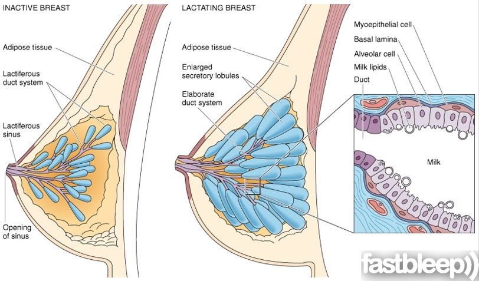

Bienvenue Sur Medical Education
L'allaitement
- Le massage areolaire

L'allaitement maternel
Education de la mere
Proposer la tetee des que bebe se reveille et cherche (avant qu'il ne pleure).
Aider la mere a bien s'installer pour la tetee.
Ne pas toucher la tete de bebe : il bascule un peu en arriere pour ouvrir la bouche.
Ne pas toucher le sein de la mere.
Observer si bebe fait une tetee efficace (grands mouvements).
Apprendre a la mere a retirer le bebe du sein en glissant un doigt dans sa bouche et a extraire un goutte de colostrum en appuyant dur son areole.
Verifier si bebe reeoit du lait :
Au moins 3 couches lourdes par jour (urines).
Au moins 3 selles molles par jour.
Le sein est plus souple apres la tetee.
Installation pour la tetee
Lavage de mains pour la mere.
Position confortable :
Assise pieds releves, dos bien cales, avant-bras soutenu.
Allongee sur le cete, tete bien surelevee. Mettre un traversin pour caler bebe, drap borde ne montant pas plus haut que les hanches.
Laisser le bebe chercher le sein en le soutenant par la nuque et en maintenant sa levre superieure face au mamelon.
Position adaptee du bebe
Tete face au sein, legerement deflechies.
Tete dans l'axe du corps.
Corps du bebe tout contre le corps de la mere.
Bouche grande ouverte.
Levre inferieure eversee, menton qui touche le sein.
Mouvements de tetee lents et profonds, avec de petits arrets tous les 1 a 3 mouvements.
Les complements
Aucun complement ne doit etre donne aux nouveaux-nes, aucun aliment, ni aucune boisson autre que le lait maternel sauf indication medicale.
Les complements entraenent de nombreuses difficultes aboutissant a un sevrage precoce.
Chercher les raisons qui font que la mere demande un complement alimentaire. Ecouter et faire parler la mere. Chercher avec elle pourquoi bebe veut teter tout le temps. Lui suggerer d'autres idees pour calmer le bebe : le deshabillez, le caresser, lui parler, le changer, le baigner, le porter, lui faire sucer un doigt, le promener.
Tirer le lait
Les tire-laits manuels ou electriques.
L'expression manuelle : prendre l'areole entre le pouce et l'index et appuyer vers l'arriere, puis presser entre les doigts de faeon repetitive.
L'alimentation a la tasse ou au chapeau du biberon
Envelopper les bras du bebe s'il gesticule beaucoup.
Le caler en position assise sur les genoux.
Maintenir sa nuque en arriere.
Remplir a moitie la tasse.
Approcher la tasse contre la levre et la gencive superieure.
Ne pas appuyer sur la levre inferieure.
Incliner la tasse pour que le lait arrive au bord.
Le bebe glisse sa langue sous la tasse et prend le lait tout seul.
Complications
Les douleurs des mamelons et les crevasses
La position du bebe est la grande cause des douleurs et des crevasses.
Revoir la position au sein et aider la mere si elle a peur de la tetee : bebe entierement face au sein, tete et corps dans le meme axe, bouche grande ouverte.
Mettre un peu de lait maternel sur le mamelon et ne pas laisser secher.
Proposer le port de coupelle.
L'engorgement
L'engorgement est la complication de la congestion mammaire (montee de lait) de J2 / J4. Dans l'engorgement, les seins sont tres durs et la fievre est a 38e. C'est un œdeme dans les seins et une reaction inflammatoire. L'ecoulement de lait est bloque.
Rassure la mere, dedramatiser.
Masser les areoles afin de les assouplir et de declencher l'ejection.
Le massage areolaire
Appuyer doucement avec 2 index face a face puis le pouce et l'index, en faisant glisser les doigts de la peripherie de l'areole jusqu'e la base du mamelon.
Voir aussi :
Module Gynecologie Maternite